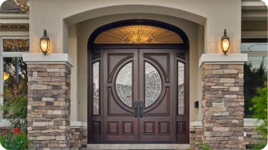

Выбрать входную дверь в частный дом - важное и не простое решение. Нужно учесть много факторов, знать
технические особенности и найти дверь, которая сохранит тепло, впишется в дизайн дома, не будет
промерзать и ржаветь. На что обратить внимание при выборе? Узнаете в статье.
Какие функции выполняет входная дверь в дом
Уличные двери эксплуатируются в более экстремальных
условиях, чем квартирные. Если условия в подъезде и
квартире более менее схожи по температуре, влажности и
прочим факторам окружающей среды, то разница по этим же
параметрам на улице и внутри дома может отличаться в разы.
Именно поэтому в частный дом нужно ставить дверь, которая
разработана специально для границы “улица-дом”.
условиях, чем квартирные. Если условия в подъезде и
квартире более менее схожи по температуре, влажности и
прочим факторам окружающей среды, то разница по этим же
параметрам на улице и внутри дома может отличаться в разы.
Именно поэтому в частный дом нужно ставить дверь, которая
разработана специально для границы “улица-дом”.

Какие возникают проблемы у дверей при эксплуатации в частном доме?
Конденсат - это вода, которая образуется из водяных паров, находящихся в воздухе. Образуется внутри на
элементах двери из-за разницы температур в помещении и снаружи.
Промерзание - переход вещества из жидкого состояния в твердое под действием отрицательной
температуры. То есть когда образовавшийся конденсат - вода, замерзает и становится льдом.
Коррозия - процесс разрушение металлов под влиянием внешней среды.
Отслоение покрытия - отделение слоев покрытия с обработанной поверхности.
Выгорание покрытия - изменение цвета, внешнего вида под влиянием солнца.
элементах двери из-за разницы температур в помещении и снаружи.
Промерзание - переход вещества из жидкого состояния в твердое под действием отрицательной
температуры. То есть когда образовавшийся конденсат - вода, замерзает и становится льдом.
Коррозия - процесс разрушение металлов под влиянием внешней среды.
Отслоение покрытия - отделение слоев покрытия с обработанной поверхности.
Выгорание покрытия - изменение цвета, внешнего вида под влиянием солнца.